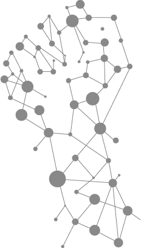

THE WORLD ISSUE
CYBER
BULLYING
cyberbullying is bullying that takes place using electronic technology. It happen 24 hours a day. 7 days a week at any time of the day or night.
I was going to fucking bitch that's why worte all shit
STAY AWAY FROM MY MAN YOU DIRTY PEICE OF @!@$%!
Everyone hate YOU!!!!
Piss off
IN THE U.S. over the last three years there has been an 87% increase in the number of Childline's counselling sessions about online bullying.
Of those who responded they were cyberbullied, 72% responded it was due to appearance while 26% answered due to race or religion and 22% stated their sexuality was the driving factor.
Of those who witnessed cyberbullying, 53% responded the victims became defensive or angry while 47% asid the victims deleted their social media accounts, underscoring its significant emtional impact.
80% of tenns use Facebook, but over 54% of those experienced cyberbullying. 66% use Youtube, 21% of them were bullied on this website. 43% use Twitter, and 28% of them experenced cyberbulling.